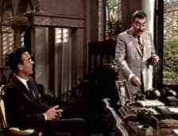
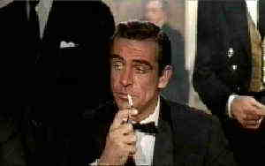
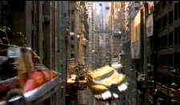

From Russia With
Love/A,B
MGM-UA/1963/115
minutes
The
leanest and meanest of the James Bond films, From Russia with Love gives the characters a
chance to develop in a somewhat realistic plot. Bond is coaxed to Turkey by the lure of
getting a Lector Decoding Box from a beautiful Russian defector, but naturally the path
turns crooked. Connery is once again the perfect Bond in this sequel to the
original and Robert Shaw's screen menace is unparalleled in the entire lexicon of Bond
films. Minimizing the silly effects goes a long way to giving 007 a chance to emote and
use his wits and physicality to rescue the day.
 |
Connery
and Armendarez. ãMGM-UA |
From
Russia with Love suffers from some of the same grain problems as Dr. No in the outdoor
scenes, though less exaggerated. One of the darkest of all Bond films in its
cinematography treatment, the transfer of the darkest scenes looks vary good. .For those
lucky enough to have widescreen video set-ups, From Russia with Love is transferred
anamorphic 1.85.
Goldfinger/B+,B
MGM-UA/1964/110 minutes
The third
Bond features a very good Gert Frobe as Auric Goldfinger, a man obsessed with his own name
and some reasonable plotting to join Bond and the villains in fateful play. Connery
continues as 007 this time attempting to foil Goldfinger's master plot to rob Fort
Knox. Along with the usual bevy of Bond beauties, Harold Sakata is an implacable Odd-Job.
Honor Blackman is the unforgettably named Pussy Galore, and believe me, nobody can quite
say Pussy like Connery.
 |
Bond:Man
of action.. ãMGM-UA |
One of the most beautifully
photographed Bond entries, Goldfinger is still slightly grainy in the outdoor
scenes. The DVD transfer is sharp and colors are rich and intense. Delivered anamorphic
1.85, the DVD preserves the maximum amount of detail. transfer The Goldfinger mono
soundtrack is the crispest of the first three films. Detail comes slightly more alive. |
Dr. No/A-,C+
MGM-UA/1962/110
minutes
A spectacular
debut for the Bond series from the opening titles to the delightful fade out, Dr. No
chartered international waters with all the aplomb of its main character. From character
detail to delicious locales, this is film enchantment.
 |
Banco!
ãMGM-UA |
For the most part the anamorphic
DVD transfer is all right. The transfer elements are grainy to begin with and some
sections of this DVD look simply awful. Sunny blue skies are a mass of large grain. almost
as if the elements have been overly enhanced, hence excess ringing of the grain. The
sound is on a par with the visuals. The bottom line is that it's hard to detract from the
fun of watching Sean Connery in his Bond bow.
Fifth Element/C,A
Columbia
Tristar/1997/126 minutes
Is it actually a comedy? The hilarity
confounds me. As an action flick it is ridiculous. The spectacular look of the film seems
wasted on the silliest character interaction this side of Planet X. Director Luc Besson
pokes fun at icons like Blade Runner with a floating air junk selling chinese food, but
wherefore art thou stylish director of La Femme Nikita or even the overblown elements of
The Big Blue. Bruce Willis goes through the action hero motions while newcomer Milla
Jovovich is a delightful red-headed alien. Gary Oldman is rather an embarrassment as the
villain.
 |
Great
effects but zero gravity. ãColumbia Tristar |
This may not
be the first rate movie director Besson intended but it sure is a fantastic looking DVD.
Exciting color pops right off the screen. The anamorphic transfer is sharp and film-like.
The depth is amazing. The Dolby 5:1 surround is awesome, with bass vibrating deeply and
firepower enveloping the home theater arena. |